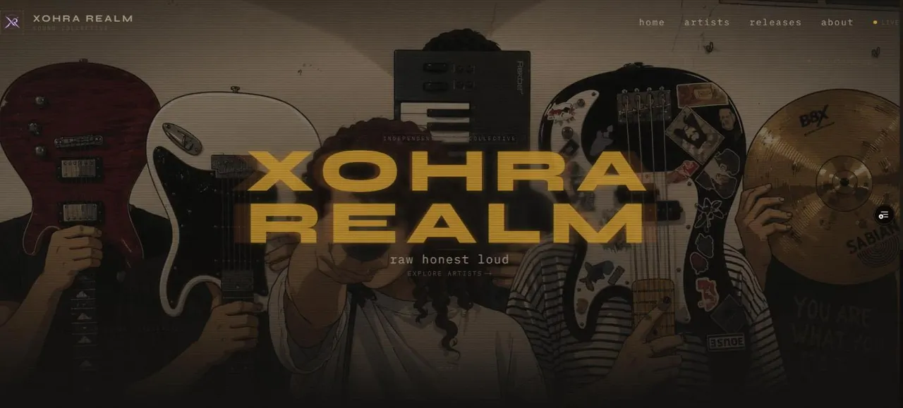
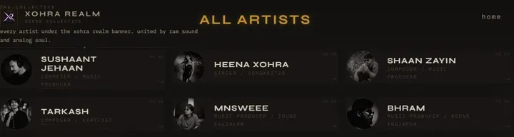
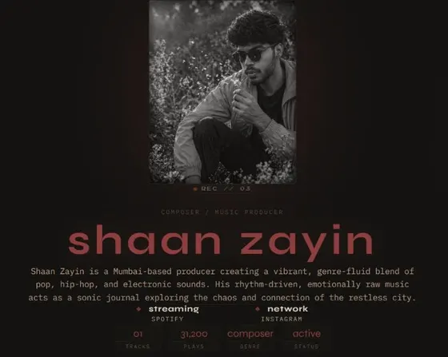

What it does
- Presents the collective's six artists, each with a profile page, a bio and links to their Spotify and Instagram.
- A global player sits in the layout, so audio keeps playing while you move between pages.
- While a track plays, its frequency spectrum scales and fades a ring in a React Three Fiber scene. When nothing plays, the ring breathes slowly on its own.
- An about page sets out the collective's three ideas: raw, authentic, underground.
How it is built
- Framework
- Next.js 16 (App Router), React 19, TypeScript, Tailwind CSS 4, Framer Motion for page transitions.
- Audio
- One
HTMLAudioElementowned by a Zustand store, with the queue, volume and seek state. A Web AudioAnalyserNode(FFT size 256, smoothing 0.8) samples frequency data every animation frame. wavesurfer.js draws the waveform. - 3D
- React Three Fiber and drei: particle field, camera rig, glow orb and the audio-reactive ring.
- Data
- A Supabase Postgres schema for artists, tracks, releases and a release_tracks join table, with row-level security and read-only public policies.
- Hosting
- Vercel.
The hard part
Keeping a single audio graph alive. A browser lets you wrap an audio element in a MediaElementAudioSourceNode only once, so the analyser hook refuses to build a second AudioContext. Owning the element in a global store, rather than in a page component, is what lets both the player and the 3D scene keep working when the route changes.
The second part was restraint. In the commit history the site moves toward calm: the logo animation came out, the "Listen Now" button was parked, and the artist pages were re-centred and given more room.


Status and limits
- The pages render typed seed data from the repository. The Supabase schema and clients are in place but are not yet the live data source.
- Track counts, play counts and the demo audio on the artist pages come from that seed data. They are placeholders, not real streaming numbers.
- The repository README is still the Next.js template, so the code is the documentation for now.
- I haven't measured performance on low-end phones, where the WebGL scene is the main cost.
Related
The music behind it: Shaan Zayin's releases.